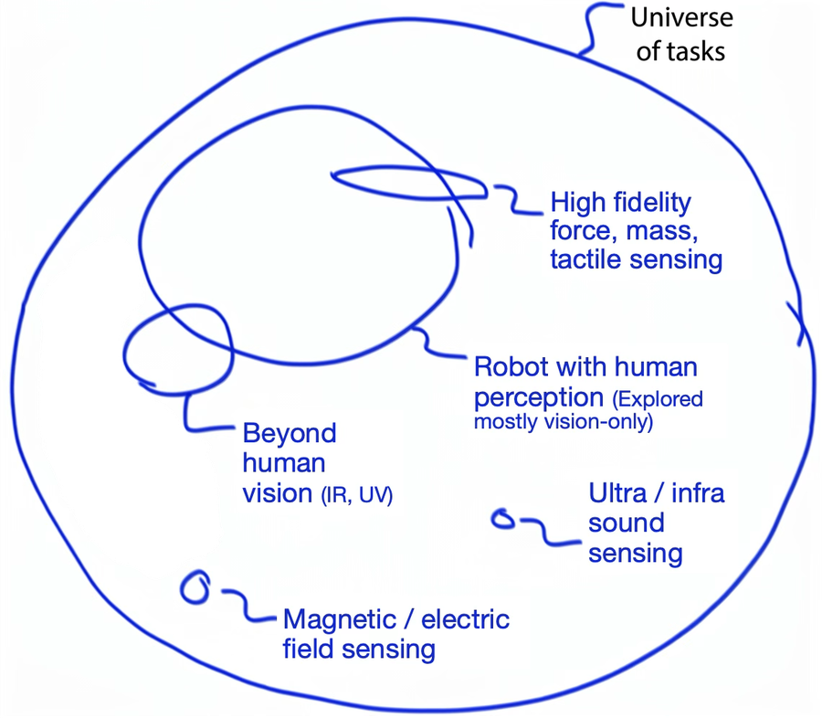

ICRA 2027 Workshop
Beyond Vision for Robotic Manipulation
Seoul, South Korea • – Half-day workshop
COEX Convention & Exhibition Center • Workshop day & room TBA
513 Yeongdong-daero, Gangnam-gu, Seoul 06164, Republic of Korea · Map ↗

We propose Transmodal Sensing for robotics, rooted in the idea of transcending human sensory modalities, to describe a new paradigm for robot perception. Multimodal sensing emphasizes how information from different modalities can be combined. With transmodal sensing, we shift the community's focus to what robots need to sense: which task-relevant physical properties remain hidden, and what sensing principles and sensor designs can make them observable beyond human perception. These perspectives are complementary: transmodal sensing can draw on multimodal fusion while expanding the range of physical properties available for robot reasoning and control.
Many robot perception systems draw on modalities familiar to humans: cameras capturing the visible spectrum, microphones capturing audible sound, and tactile sensors inspired by human touch. Exploring additional modalities can expand both what robots perceive and what tasks they can perform. For example, a laboratory robot could distinguish visually identical liquids, sense the contents of a sealed container, or monitor object states occluded by its own hand during manipulation.
Our workshop invites the community to discuss what new sensors we can integrate or consider for robot form factors, what new task domains they can solve, and how we can make robot learning frameworks for this new type of signal. Submissions cover new sensors and hardware, new task and application domains enabled by sensing, and learning algorithms that exploit novel sensing, presented as spotlight paper talks, posters, or live demos, alongside a plenary panel discussion on transmodal sensing.
We welcome work on novel robot perception beyond vision for manipulation. Submissions typically fall into one of the three categories below, but are not limited to them.
Novel sensors and hardware systems that make hidden, task-relevant physical properties observable: new sensing principles, sensor designs, and their integration into robot form factors such as hands, grippers, arms, and tools.
Transmodal sensing may unlock new task domains or solve challenging tasks more effectively. We seek creative submissions that demonstrate a deep understanding of unique task constraints and exploit underlying physical phenomena to overcome them.
How to incorporate new signals into robot learning: multi-sensor fusion policies, sim-to-real of new signals, agentic orchestration of sensing, representation learning, and more.
A few examples to give context for the scope. Numbers refer to the references below.
Electric field / impedance
Chemical liquid classification for biology lab automation [1].
Beyond human vision
Infrared and UV sensing for bagging automation [2].
Actuator as a sensor (QDD)
High-fidelity force, mass, and slosh sensing through motor current, with no F/T sensor [7].
Magnetic field
Magnetic field sensing for tactile policies [10, 11].
Fourth Speaker
To be announced
A half-day program featuring four invited talks (20 minutes each), five spotlight paper talks, a poster session, a live demo session, a panel discussion, and awards.
| Time | Session |
|---|---|
| – |
Opening Remarks |
| – |
Invited Talk — Joonho Lee (Neuromeka)“Proprioceptive contact sensing” |
| – |
Invited Talk — Jeff Ichnowski (Carnegie Mellon University)Tentative |
| – |
Invited Talk — Ken Goldberg (UC Berkeley)Tentative |
| – |
Spotlight Paper Talks5 talks × 5 minutes · Call for papers |
| – |
Poster Session & Coffee BreakUp to 10 posters |
| – |
Live Demo SessionUp to 3 selected research demos and Neuromeka's interactive Reflex demo · About the live demos |
| – |
Invited Talk — Speaker to be announced |
| – |
Panel DiscussionThe Next Universe of Tasks via Novel Modalities · with the invited speakers · Details |
| – |
Closing Remarks & Award Announcement |
| Workshop Ends |
We invite short papers that explore novel robot perception (beyond vision) in manipulation. Papers are non-archival extended abstracts (2–4 pages, IEEE format), reviewed single-blind by the organizing committee with at least two reviews each. Up to 5 accepted papers are presented as spotlight talks and up to 10 as posters, all in person. Video supplementary material is not mandatory, but highly encouraged. Please use the IEEE RAS paper template. See Scope & Topics for the categories of contributions we welcome.
Live demos can be submitted separately or combined with a paper/poster — see Live Demos below. Accepted papers and demos are eligible for the Best Poster and Best Live Demo awards.
All deadlines are 23:59 Anywhere on Earth (AoE) unless noted otherwise.
The live demo session features up to 3 selected research demos alongside Neuromeka's interactive Reflex demo. Demos also run at the poster and demo tables during the breaks.
Live demos can be submitted separately or combined with a paper/poster. Demo-only submissions need a 1-page proposal and a video showing how the robot works. Up to 3 research demos are selected. Accepted videos are shown on this website and at the workshop. Authors who attend in person can show their robot live at the poster and demo tables during the breaks. We also invite paper/poster submissions with video to the live demo session.
We favor demos that demonstrate full-stack sensing and actuation and tackle novel task domains. However, a demo can also be a part of the policy (the sensing module itself), such as a sensor for a teleoperation glove, as long as there are rich visuals to help understand its role in robotics.
The organizers' team runs its proprioceptive reflex policy live. It follows the Proxy route and uses no force sensor. Trained in simulation on three interaction primitives (a spring, a plane, and a rail), the policy sits as a frozen layer between task commands and the joint controller. From the robot's own state history it responds to what it touches, such as a surface that blocks or a bore that guides.
On hardware it inserted pegs at 0.02 mm clearance with less than half the contact force of IK + PD, and raised success from at most 22% to 36–58%. Attendees can push the arm mid-insertion and watch the estimated contact force on a screen.
The Next Universe of Tasks via Novel Modalities
Panelists will explore how sensing modalities beyond conventional vision, touch, and force/torque feedback can unlock new manipulation capabilities, reveal otherwise unobservable physical states, and reshape the future of embodied intelligence. The discussion will examine what becomes possible when robots leverage machine-native sensing and unconventional sensory modalities, covering questions such as:
Prizes worth over $1,000 USD in total.
Best Live Demo
Awarded to the most compelling live demonstration of transmodal sensing and actuation.
Winner: TBD
Best Poster
Awarded to the strongest poster presentation among accepted papers.
Winner: TBD
Our workshop is highly interactive by design, centering on hands-on physical demos, poster presentations, and open discussions. We actively encourage student and early-career researchers and aim for a balanced mix of participants across diverse geographic regions and both academia and industry.
Thank you to Neuromeka for supporting the workshop, bringing live demonstrations, and helping organize the workshop logistics.
Thank you to Klajd Lika and Bota Systems AG for supporting the workshop through product sponsorship.